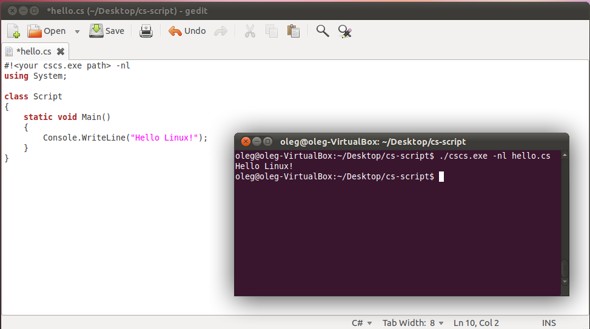
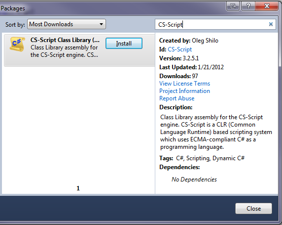

|
CS-Script 3.27.0 |
What's
New in CS-Script
This is the combined list of changes in v.3.4.0-3.9.4
Implemented full
integration with Notepad++
Implemented dedicated Notepad++ pluging for developing and executing
CS-SCript scripts.
Referencing NuGet packages from
script
It is now possible to reference NuGet packages from the script with
automatic downloading the pacjkages from the official NuGet repository.This is the example of using the DotNetZip library form NuGet.org
//css_nuget dotnetzip |
CS-Script on
Chocolatey
Chocolatey is the repository for the Windows software packages. Chocolatey NuGet is a Machine Package Manager, somewhat like apt-get, but built with Windows in mind. It is also the source repository of the OneGet package manager of Windows 10.
CS-Script can be installed with the following command:
C:\> choco
install cs-scriptRead more on Chocolatey and how to enable it on your version of windows here: https://chocolatey.org/
API Changes
Implemented a nomber of small API improvements:- Added
setting additional includes from precompilers
static public bool Compile(ref string content, string scriptFile, bool IsPrimaryScript, Hashtable context)
{
if (!IsPrimaryScript)
return false;
var newIncludes = (List<string>)context["NewIncludes"];
newIncludes.Add(Path.Combine(Path.GetDirectoryName(scriptFile), "Utils.cs")); - Extended
support for AutoClasses to handle lower-case 'main' entry points.As
well as different signatures
//css_args /ac
using System;
void main()
{
Console.WriteLine(Environment.Version);
}
Other acceptable signatures:
int main()
int main(string[] args)
void main(string[] args) - Added
compiling/loading script code to strongly typed delegate
LoadDelegate<T>
var Add = CSScript.LoadDelegate<Func<int, int, int>>(@"int Add(int a, int b) { return a + b; }"); //you can also use similar CSScript.Evaluator.LoadDelegate
int result = Add(5,6);
New script hosting engine based on
Mono "compiler as service"
It is finally here. CS-Script now allow script execution in the caller
AppDomain without necessity to unload the script assembly. All this is
possible due to the integration with the Mono "compiler as
service". The hosting API is largely consistent with
the CodeDOM
based API:
dynamic script = CSScript.Evaluator |
New CS-Script suite
deployment model
Over the time CS-Script has grown into the full scale application
framework. The intensive CS-Script feature set has become heterogeneous
and sometimes not entirely consistent. Thus the necessity to separate
main stream features (and samples) from the experimental ones has
arisen. Starting from v3.5 CS-Script default distro includes only the
most practical features. This dramatically simplifies the deployment
and the navigation within the installed components. From another hand all other non-min stream features are still available as a dedicated Extension Pack from the CS-Script Home Page.
Full support
for Mono/Linux
CS-Script
now has full support on Linux. While even before this release
it was possible to execute the C# scripts on Mono only from this
version the
script engine implementation has been reworked to to
bring the same level of support as on Windows.

CS-Script with
Visual Studio 2012
Added
support for Visual Studio 2012.
CS-Script Visual Studio 2012 Extension is updated to allow automatic
loading
the script file on �Debug Script� shell-extension invocation.
Workaround for
Windows 8 / Visual Studio 2012
Shell Extension incompatibility
On
Windows 8 with Visual Studio 2012 right-click menu
configuration may conflict with the CS-Script "Simplified
Context Menu", "Advanced Shell
Extension" and
"Open
Action"
may not work correctly in result. In such cases it is still possible to
use
CS-Script Advanced Shell
Extension as long as it configured for the "Use for all
file extensions".

CS-Script on NuGet
CS-Script
just has been published on NuGet
